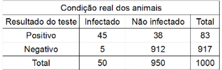
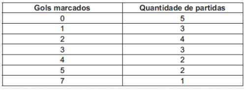
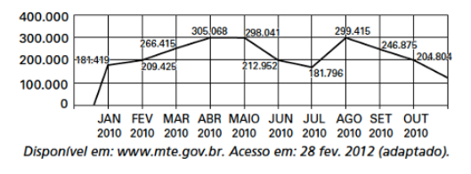
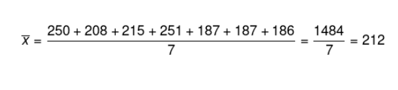

πclass — o principal pilar do seu aprendizado


Estatística é uma área da Matemática que se ocupa da coleta, organização e análise de dados. Os dados podem ser quantitativos ou qualitativos e a organização deles é feita por meio de tabelas e gráficos. Já a análise dos dados nos níveis mais básicos da Estatística é feita por meio de medidas de centralidade (moda, média e mediana), observações de gráficos e tabelas, porcentagens e também proporcionalidade.
Esse conteúdo é amplamente explorado nas questões do Enem, que também tem o objetivo de avaliar a leitura, análise e interpretação de dados. Para uma melhor compreensão, tomaremos como exemplos alguns exercícios do Enem para discutir alguns desses conceitos.
O exercício abaixo será resolvido e comentado para discutirmos uma das formas de organizar dados em uma tabela. Observe que a primeira linha é usada para colocar o título da tabela. A segunda linha e primeira coluna contêm indicações do modo como a tabela é preenchida e/ou as variáveis em questão. Os dados em si são colocados nas demais linhas e colunas.
Observe o exemplo:(ENEM – 2009) Os planos de controle e erradicação de doenças em animais envolvem ações de profilaxia e dependem em grande medida da correta utilização e interpretação de testes diagnósticos. O quadro abaixo mostra um exemplo hipotético de aplicação de um teste diagnóstico
Considerando que, no teste diagnostico, a sensibilidade é a probabilidade de um animal infectado ser classificado como positivo e a especificidade é a probabilidade de um animal não ser infectado e ter resultado negativo, a interpretação do quadro permite inferir que
Não existe outra maneira de solucionar esse exercício do que procurar os dados que comprovem ou refutem as alternativas na tabela e no texto ao redor dela. ATENÇÃO: o texto que o exercício traz é tão importante quanto os dados da tabela. Prova disso é a alternativa A, pois a especificidade é definida no texto, e não na tabela, como a probabilidade de um animal não ser infectado e ter um resultado negativo. Observando a tabela, a especificidade é de 912 animais. Portanto, a alternativa está incorreta.
A alternativa correta é a letra B. Para verificar isso, observe que o texto da alternativa menciona apenas o número de indivíduos infectados. Há uma coluna somente para isso na tabela. São 45 indivíduos com teste positivo para cada 50 infectados. Por regra de 3, a cada 100 infectados, 90 terão resultado positivo no teste.
Os dados também podem vir organizados na forma de gráficos, e essas representações são mais frequentes no Enem. Observe o exemplo a seguir:
(ENEM) O gráfico, obtido a partir de dados do Ministério do Meio Ambiente, mostra o crescimento do número de espécies da fauna brasileira ameaçadas de extinção.
Se mantida, pelos próximos anos, a tendência de crescimento mostrada no gráfico, o número de espécies ameaçadas de extinção em 2011 será igual a:

Observe que o título do gráfico não aparece em sua parte superior, mas do lado esquerdo. O importante é que, assim como na tabela, expresse a informação necessária para compreensão dos dados. Esse gráfico é conhecido como gráfico de colunas, pois cada quantidade é expressa por meio de uma barra vertical.
Observe que o crescimento do número de espécies ameaçadas de extinção é linear e está demarcado em períodos de quatro anos no gráfico. A pergunta é exatamente para o fim de mais um período de quatro anos, logo, basta descobrir o aumento do número de animais em cada período de quatro anos e somar esse acréscimo a 461.
Para tanto, usaremos conhecimentos de progressão aritmética, mais especificamente a fórmula para encontrar um termo qualquer. Se 239 for o primeiro e 461 for o último (sétimo), basta encontrar a razão para saber o aumento em um período de quatro anos. Observe:

Assim, em 2011, o número de espécies ameaçadas de extinção será:
461 + 37 = 498
Gabarito: Letra C
Todas as informações de gráficos e tabelas possuem algum elemento que pode servir para representar todos os outros. Esse elemento é conhecido como medida de centralidade. As medidas mais importantes para a estatística básica são:
(ENEM 2010) O quadro seguinte mostra o desempenho de um time de futebol no último campeonato. A coluna da esquerda mostra o número de gols marcados e a coluna da direita informa em quantos jogos o time marcou aquele número de gols.
Se X, Y e Z são, respectivamente, a média, a mediana e a moda dessa distribuição, então
Observe primeiramente que a moda é zero, pois foi o número de gols marcado no maior número de partidas.
As quantidades de gols devem ser colocadas em ordem crescente para encontrar a mediana:
0, 0, 0, 0, 0, 1, 1, 1, 2, 2, 2, 2, 3, 3, 3, 4, 4, 5, 5, 7
Observe que existem dois valores centrais. Portanto, a mediana será:
(2+2)/2 = 4/2 = 2
Já a média pode ser obtida pela técnica de média ponderada ou de média simples. Para tanto, basta somar os elementos da lista acima e dividir o resultado por 20 ou, como média ponderada, considerar o número de partidas como peso. Ambos os cálculos darão o mesmo resultado.
(0 + 0 + 0 + 0 + 0 + 1 + 1 + 1 + 2 + 2 + 2 + 2 + 3 + 3 + 3 + 4 + 4 + 5 + 5 + 7) / 20 = 45 / 20 = 2,25
Sabendo que a média é X = 2,25, a mediana é Y = 2 e a moda é Z = 0, teremos:
X > Y > Z ou Z < Y < X
Gabarito: Letra E
Seleção de videoaulas sobre esse assunto com ótimos professores que os ofertam gratuitamente na internet:
1. (Enem 2019) O quadro apresenta a quantidade de um tipo de pão vendido em uma semana em uma padaria.

O dono da padaria decidiu que, na semana seguinte, a produção diária desse tipo de pão seria igual ao número de pães vendidos no dia da semana em que tal quantidade foi a mais próxima da média das quantidades vendidas na semana.
O dia da semana utilizado como referência para a quantidade de pães a serem produzidos diariamente foi
2. (Enem) O gráfico apresenta o comportamento de emprego formal surgido, segundo o CAGED, no período de janeiro de 2010 a outubro de 2010.
Com base no gráfico, o valor da parte inteira da mediana dos empregos formais surgidos no período é
3. (Enem 2021) O técnico de um time de basquete pretende aumentar a estatura média de sua equipe de 1,93 m para, no mínimo, 1,99 m. Para tanto, dentre os 15 jogadores que fazem parte de sua equipe, substituirá os quatro mais baixos, de estaturas: 1,78 m, 1,82 m, 1,84 m e 1,86 m. Para isso, o técnico contratou um novo jogador de 2,02 m. Os outros três jogadores que ele ainda precisa contratar devem satisfazer à sua necessidade de aumentar a média das estaturas da equipe. Ele fixará a média das estaturas para os três jogadores que ainda precisa contratar dentro do critério inicialmente estabelecido.
Qual deverá ser a média mínima das estaturas, em metro, que ele deverá fixar para o grupo de três novos jogadores que ainda contratará?
Calculando a média, temos que:
Colocando os dados em ordem, temos que:
181.419, 181.796, 204.804, 209.425, 212.952, 246.875, 266.415, 298.041, 299.415, 305.068
Como há 10 elementos, os termos centrais são os valores: 212.952 e 246.875, que são o 5° e 6° da sequência.
Calculando a média entre eles, temos que:
(212.952 + 246.875) : 2 = 229.913,5
Se a média atual é 1,93, então sabemos que a soma das 15 alturas é igual a 1,93 · 15 = 28,95 metros.
Subtraindo as 4 alturas dos jogadores que foram substituídos e acrescentando a altura do outro jogador, temos que:
28,95 + 2,02 – 1,78 – 1,82 – 1,84 – 1,86 = 23,67
Além disso, serão contratados outros 3 jogadores com altura x, y z, e queremos que a média de altura seja 1,99, então, temos que:
(23,67 + x + y + z) : 15 = 1,99
23,67 + x + y + z = 1,99 · 15
23,67 + x + y + z = 29,85
x + y + z = 29,85 – 23,67
x + y + z = 6,18
Para encontrar a média da altura desses três jogadores, basta dividir por três: 6,18 : 3 = 2,06.